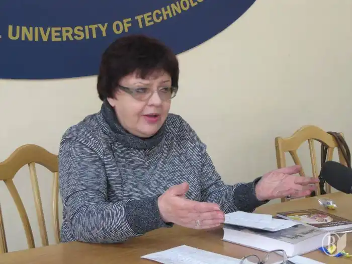

Дзюбенко-Мейс Наталя Язорівна народилась у червні 1952-го року в с. Київець, Львівської області. Закінчила факультет журналістики Львівського університету, Працювала журналістом в газетах "Молода Галичина", "Голос України", "День" редактором у видавництвах "Каменяр" та "Український письменник".
Збірки віршів "Притча про зорю" та "Перепливти ріку", "День холодного сонця" зайняли почесне місце серед шанувальників її поетичної творчості. Останню збірку поезій "Та, що біжить по стерні" Наталя присвятила світлій пам’яті свого чоловіка – Джеймса Мейса – відомого наукового діяча і професора Києво-Могилянської академії.
Відомий роман письменниці "Андрій Первозванний" став справжнім відкриттям для української літератури. Дзюбенко-Мейс Наталя – член Національної Спілки Письменників України, заслужений працівник культури України, лауреат Державної премії імені Олеся Гончара та премії Дмитра Нитченка Наталя – автор численних аналітичних статей і досліджень з питань голодомору 1932-33-х років та забутих сторінок історії України опублікованих у різних періодичних виданнях та збірниках, упорядник книг "День і вічність Джеймса Мейса" та "Ваші мертві вибрали мене" – в якій зібрані матеріали історичних досліджень її чоловіка.